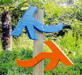

제주 올레길 표지
처음 걷는 이도, 혼자 걷는 이도, 제주올레길에서는 길을 잃을 염려가 없습니다. 곳곳에 설치된 표지들이 친절하게 길을 안내하기 때문이지요. 풍광에 홀려, 향기에 취해, 깜빡 길을 잘못 들어도 걱정 없습니다. 마지막 표지를 보았던 지점으로 돌아가 찬찬히 주변을 살피면 금세 반가운 표지를 발견할 수 있으니까요.
-
간세
간세는 제주올레의 상징인 조랑말 이름입니다. 느릿느릿한 게으름뱅이라는 뜻인 제주어 ‘간세다리’에서 따왔습니다. 갈림길에서는 간세가 길을 안내합니다. 시작점에서 종점을 향해 정방향으로 걷는 경우, 간세 머리가 향하는 쪽이 길의 진행 방향입니다. 때때로 안장을 얹은 간세를 만날 수 있는데요, 해당 구간의 볼거리와 그에 관한 설명 문구가 쓰여 있기도 하고, 휠체어 구간의 시작점(S)과 종점(F)을 아이콘으로 알리는 역할도 합니다.
-
리본
제주의 푸른 바다를 상징하는 파란색 리본과 제주 대표 특산품 감귤을 상징하는 주황색의 리본 두 가닥을 한데 묶어 주로 전봇대와 나뭇가지에 매달아 놓았습니다. 사람의 눈높이보다 조금 높은 곳에서 한들한들 바람에 흔들리고 있지요. 멀리서도 눈에 잘 띄므로 리본만 잘 따라 걸어도 길을 잃을 염려가 없습니다.
-

화살표
화살표는 길바닥, 돌담, 전봇대 등에 붙어 길의 진행 방향을 알려줍니다. 파란색 화살표는 정방향으로 걸을 때의 진행 방향을, 주황색 화살표는 역방향으로 걸을 때의 진행 방향을 가리킵니다. 노란색 화살표는 휠체어 구간의 우회로를 의미합니다.
-

나무화살표
갈림길에서 종종 만나는 나무화살표는 나무 기둥에 설치한 파란색과 주황색 화살표가 진행 방향을 알려줍니다. 파란색 화살표는 정방향일 때 진행 방향을, 주황색 화살표는 역방향일 때 진행 방향을 가리킵니다.
-
스탠드(우회 및 위험 안내)
특별히 주의가 필요한 위험 구간이나, 일시적으로 우회해야 하는 곳에 설치되어 있습니다. 우회로의 경로와 시간, 거리 등을 알려줍니다. 우회로에는 특별히 주황색 리본 두 가닥을 매달아 길을 안내합니다.